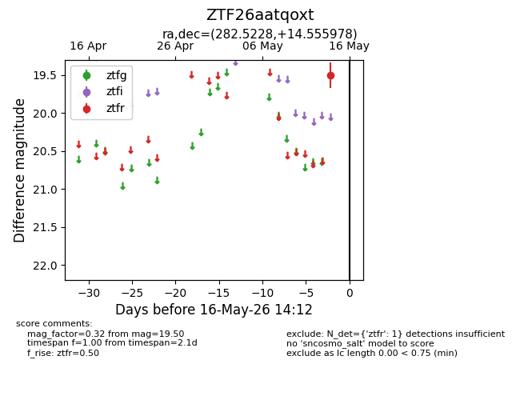
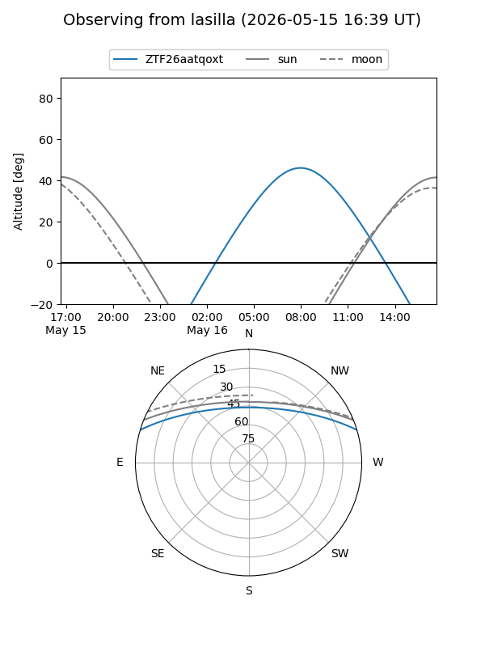
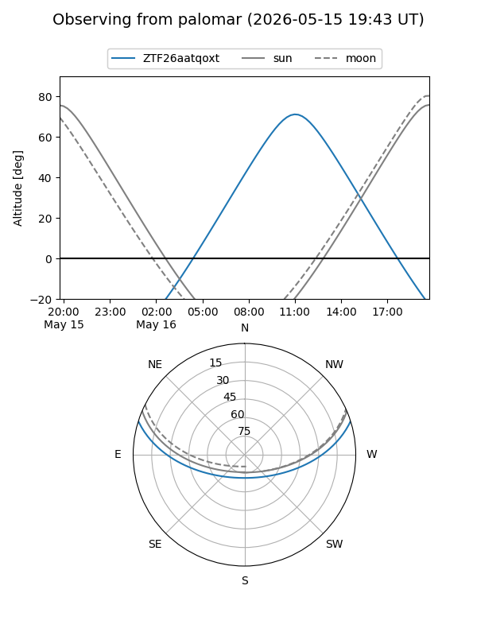

ZTF26aatqoxt
Target ZTF26aatqoxt at 2026-05-16 14:14
Aliases and brokers:
FINK: link
Lasair: link
ALeRCE: link
alt names
ZTF26aatqoxt (ztf,fink_ztf)
Coordinates:
equatorial (ra, dec) = 282.5228,+14.55598
equatorial (HMS+DMS) = 18:50:05.48,+14:33:21.52
galactic (l, b) = (45.7986,+6.87259)
Flags:
Photometry:
last ztfr=19.50
1 ztfr detections
Lightcurve

Visibility


Additional plots